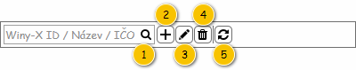

Uživatelské rozhraní poskytuje přístup k zobrazení přehledu zákazníků. Dále umožňuje využití nástrojů pro filtrování a řazení.
Rozložení obrazovky vychází z obecné struktury pro přehledy seznamů a číselníků, zde je tedy popsáno její použití.
Nadpis: Správa zákazníků – viz Struktura přehledu.
Text tlačítka: Zákazníci – viz Struktura přehledu.
Nadpis: Zákazníci – viz Struktura přehledu.

Pokud uživatel vjede myší na prvek nástrojové lišty, je zobrazen ToolTip. V rámci ToolTipu, pokud není uvedeno jinak, je zobrazen text ve sloupci Komponenta.
| Callout | Komponenta | Nadpis | Typ komponenty | Příklad hodnoty | Hodnota | Výchozí hodnota | Formát | Zpřístupněná | Viditelná | Chování | Validace | Poznámka |
|---|---|---|---|---|---|---|---|---|---|---|---|---|
| 1 | Textový filtr | – | Full Text Filter (viz Ovládací prvky třetích stran) SearchBox | – | – | – | Pokud není v rámci ovládacího prvku zadán hledaný text, jsou na pozadí (placeholder) vypsány názvy sloupců, podle kterých je filtrováno (viz sloupce Chování). Mezi jednotlivými názvy sloupců je použit oddělovač: „/“. Tento text je zobrazován i v rámci bublinkové nápovědy ovládacího prvku. Chování je pak řešeno v rámci použité komponenty. | Vždy | Vždy | Psaním filtruje řádky dle sloupců:
Poznámka: Ve sloupcích je vyhledáváno fulltextově. | – | – |
| 2 | Založit zákazníka | – | Button
| – | – | – | – | Vždy | Pokud má uživatel právo na editaci Zákazníka (EDIT_RP_CUSTOMERS, viz Oprávnění na typ entity). | Spustí: . | – | – |
| 3 | Upravit zákazníka | – | Button
| – | – | – | – | Vždy | Pokud má uživatel právo na editaci Zákazníka (EDIT_RP_CUSTOMERS, viz Oprávnění na typ entity). Pokud je vybrán alespoň jeden Zákazník. Pokud poslední označený Zákazník splňuje všechny dále uvedené podmínky zároveň:
| Spustí 500UC03: Upravit zákazníka, na vstup UC jsou předány následující hodnoty:
| – | – |
| 4 | Smazat zákazníka | – | Button
| – | – | – | – | Vždy | Pokud má uživatel právo na editaci Zákazníka (EDIT_RP_CUSTOMERS, viz Oprávnění na typ entity). Pokud je vybrán alespoň jeden Zákazník. Pokud poslední označený Zákazník splňuje všechny dále uvedené podmínky zároveň:
| Spustí 500UC04: Smazat zákazníka, na vstup UC jsou předány následující hodnoty:
| – | – |
| 5 | Obnovit data | – | Button
| – | – | – | – | Vždy | Vždy | Načte aktuální data pro tabulku. | – | – |
Pro zobrazení záznamů v přehledu je použita běžná tabulka, viz 700UI01: Komponenty – tabulka. Z toho vyplývají jak její základní vlastnosti, tak i výchozí nastavení (např. počet záznamů, které je možné označit).
Tabulka je implicitně řazena vzestupně dle sloupce Název.
| Sloupec | Nadpis | Možnost editace | Komponenta | Datový typ | Příklad hodnoty | Hodnota | Výchozí hodnota | Formát | Možnosti sloupce | Zpřístupněný | Viditelný | Chování | Validace | Poznámka |
|---|---|---|---|---|---|---|---|---|---|---|---|---|---|---|
| Indikace chyby | – V rámci nastavení viditelnosti sloupců je nadpis následující:
| Ne | – | Binární | – | Pokud existuje alespoň jedno Místo realizace, které nemá vyplněny Souřadnice (atribut Souřadnice entity Místo realizace – atribut Místa realizace entity Zákazník):
Jinak:
| – | Pokud je hodnota rovna TRUE, je zobrazena ikona: ra-incident. |
| Nikdy | Vždy | Ikona je zobrazena pouze v případě, kdy je hodnota rovna TRUE. V takovém případě je navíc zobrazen ToolTip s odpovídajícím textem:
| – | – |
| WinyX-ID | WinyX-ID | Ne | TextBox | Celé číslo | 1 | Entita Zákazník. | – |
| Nikdy | Vždy | – | – | – | |
| Název | Název | Ne | TextBox | Text | Marius Pedersen, a.s. | Entita Zákazník. | – |
| Nikdy | Vždy | – | – | – | |
| Typ | Typ | Ne | TextBox | Text | Podnikatel | Entita Zákazník. | – |
| Nikdy | Vždy | – | – | – | |
| Adresa | Adresa | Ne | TextBox | Text | Opatovská 1735, 911 01 Trenčín | Entita Adresa – atribut Adresa sídla entity Zákazník. | – | Pokud není dostupné Číslo orientační:
Pokud není dostupné Číslo popisné:
|
| Nikdy | Vždy | – | – | – |
| Právní forma | Právní forma | Ne | TextBox | Text | Akciová společnost | Entita Zákazník. | – |
| Nikdy | Vždy | – | – | – | |
| IČO | IČO / Číslo OP | Ne | TextBox | Text | 34115901 | Entita Zákazník. | – |
| Nikdy | Vždy | – | – | – | |
| DIČ | DIČ | Ne | TextBox | Text | 2020386148 | Entita Zákazník. | – |
| Nikdy | Vždy | – | – | – | |
| IČ DPH | IČ DPH | Ne | TextBox | Text | SK2020386148 | Entita Zákazník. | – |
| Nikdy | Vždy | – | – | – | |
| Plátce DPH | Plátce DPH | Ne | TextBox | Text | Ano | Entita Zákazník. | – |
| Nikdy | Vždy | – | – | – | |
| Výchozí statutární zástupce | Výchozí statutární zástupce | Ne | TextBox | Text | Simon Hovgaard Clausen | Entita Osoba zákazníka – atribut Osoby entity Zákazník. | – |
| Nikdy | Vždy | – | – | – | |
| Výchozí IBAN | Výchozí IBAN | Ne | TextBox | Text | SK70 7500 0000 0000 2581 8343 | Entita Bankovní spojení – atribut Bankovní spojení entity Zákazník. | – | Skupiny po 4 znacích oddělené mezerou. |
| Nikdy | Vždy | – | – | – |
| Poznámka | Poznámka | Ne | TextBox | Text | Aktualizovat kontaktní osoby! | Entita Zákazník. | – |
| Nikdy | Vždy | – | – | – | |
| Výchozí kontaktní osoba | Výchozí kontaktní osoba | Ne | TextBox | Text | Ivan Veliký | Entita Osoba zákazníka – atribut Osoby entity Zákazník. | – |
| Nikdy | Vždy | – | – | – | |
| Výchozí místo realizace | Výchozí místo realizace | Ne | TextBox | Text | Marius Pedersen, a.s., Trenčín | Entita Místo realizace – atribut Místa realizace entity Zákazník. | – |
| Nikdy | Vždy | – | – | – | |
| Vytvořil | Vytvořil | Ne | TextBox | Text | Jan Hraško (123456) | Entita Uživatel – atribut Vytvořil entity Zákazník. | – | Pokud je k odpovídajícímu Uživateli přiřazen Zaměstnanec (atribut Zaměstnanec):
Jinak: V případě, kdy není Uživatel k dispozici, není hodnota zobrazena vůbec. |
| Nikdy | Vždy | – | – | – |
Viz 500UI02: Detail zákazníka.
Grafický návrh vychází z FLWW2 – Správa systému.
| Odkaz | Stručný popis změny |
|---|---|
| Nástrojová lišta tabulky přehledu | Revize komponenty pro fulltextový filtr (naznačeno modře). |
| Odkaz | Stručný popis změny/doplnění |
|---|---|
| Revize kontextové nabídky textového filtru (naznačeno modře). ID-054 |
| Odkaz | Stručný popis změny/doplnění |
|---|---|
| Nástrojová lišta tabulky přehledu | Doplněno chování při více označených záznamech zároveň (naznačeno modře). |
| Tabulka s položkami přehledu | Doplněny obecné informace o použité tabulce (naznačeno modře). |
| Odkaz | Stručný popis změny/doplnění |
|---|---|
| Tabulka s položkami přehledu | Doplněny nadpisy sloupců v rámci okna pro nastavení viditelnosti sloupců tabulky (naznačeno modře). |
| Odkaz | Stručný popis změny/doplnění |
|---|---|
| Nástrojová lišta tabulky přehledu | Doplněna informace, co má být zobrazeno v rámci ToolTipu (naznačeno modře). |
| Tabulka s položkami přehledu | Doplněn popis dostupných funkcí pro práci s jednotlivými sloupci (naznačeno modře). |
| Odkaz | Stručný popis změny/doplnění |
|---|---|
| Tabulka s položkami přehledu | Doplněn sloupec s indikací chyby u Zákazníka, která nyní zobrazuje informaci o stavu geokódování obsažených Míst realizace. Doplněn formát hodnoty ve sloupci vytvořil. |